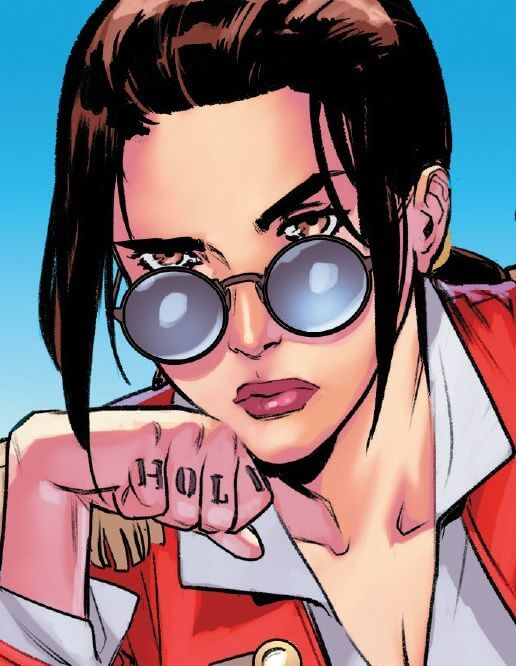
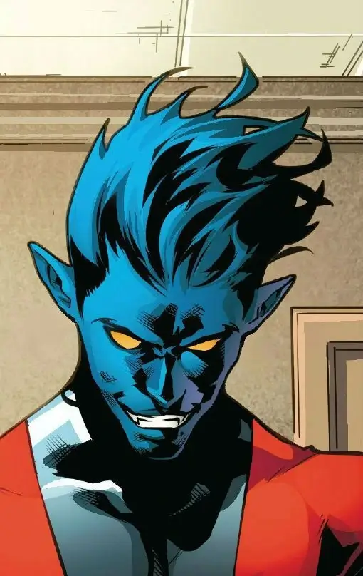
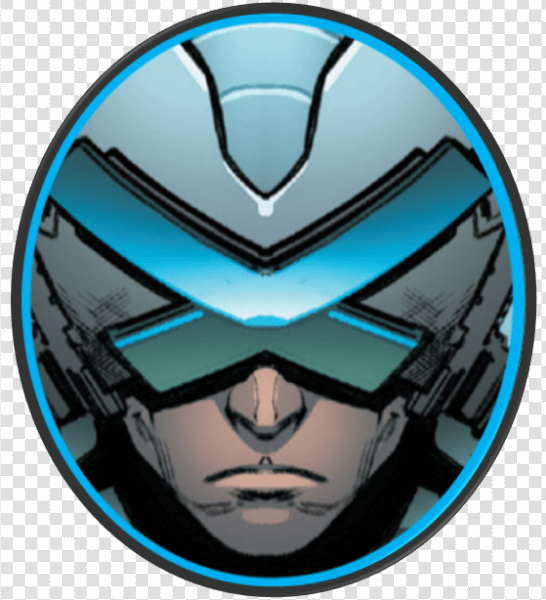
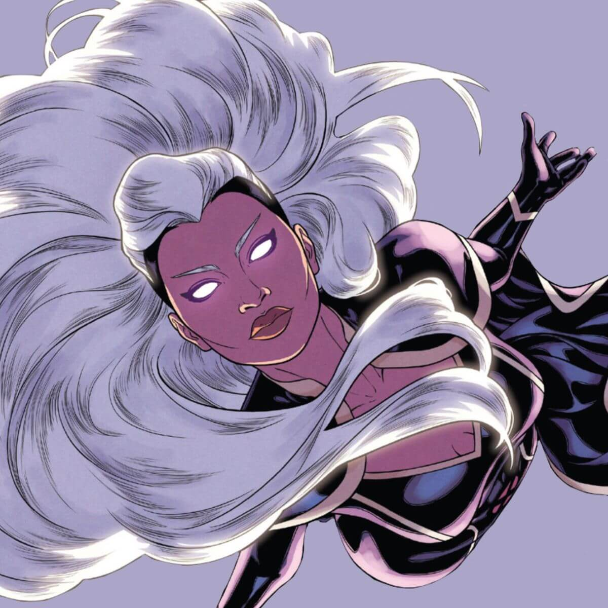
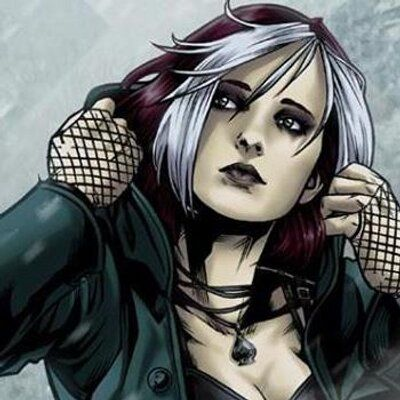
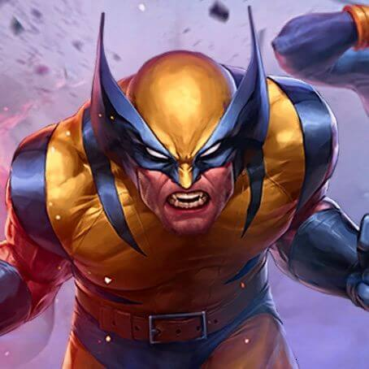
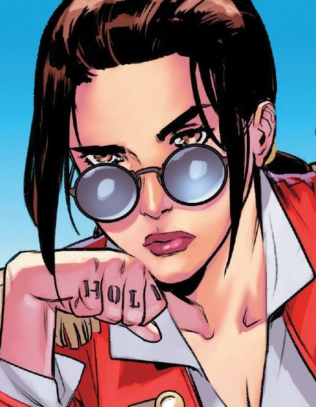
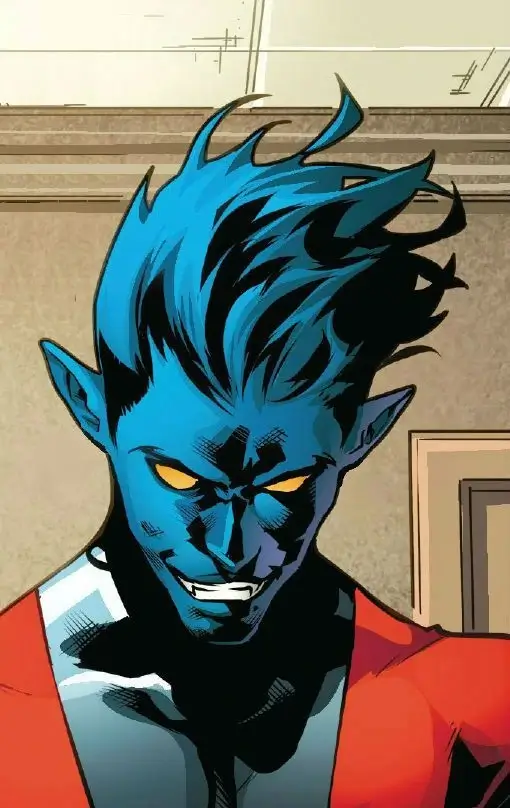
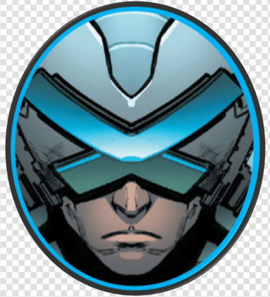
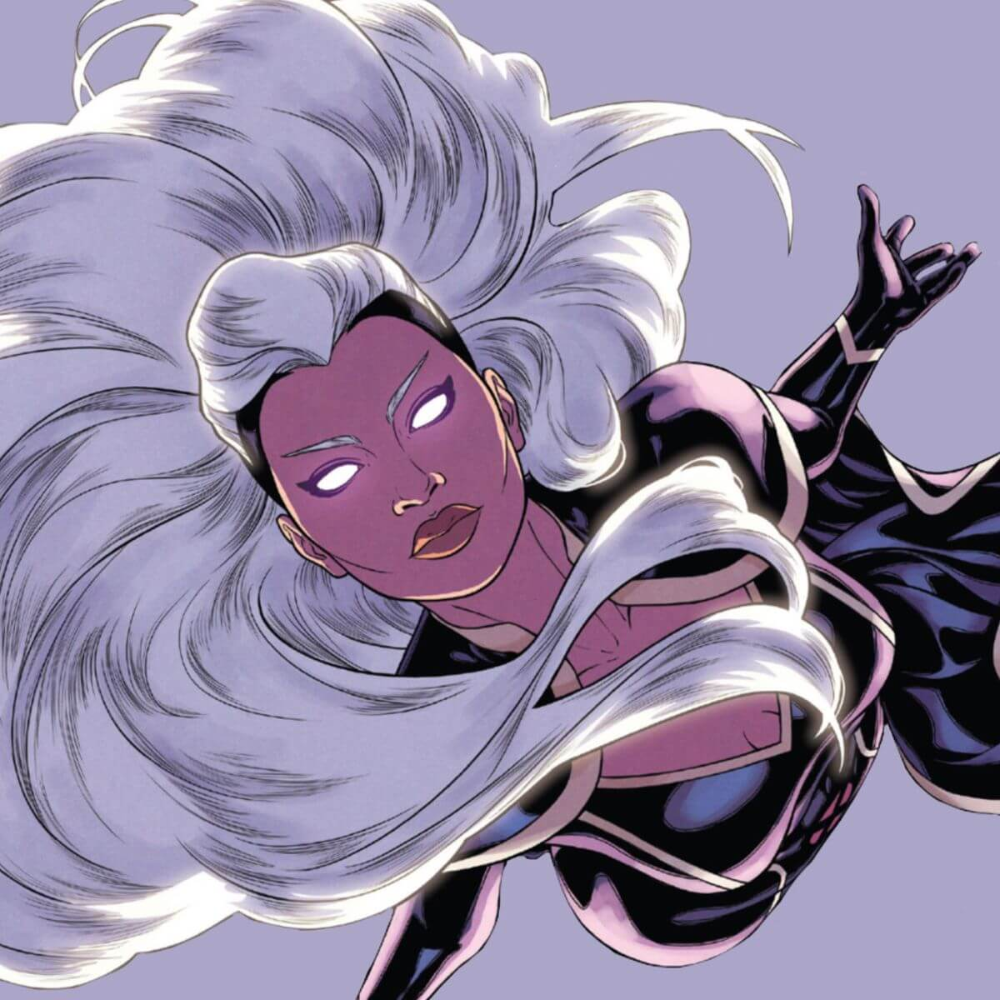
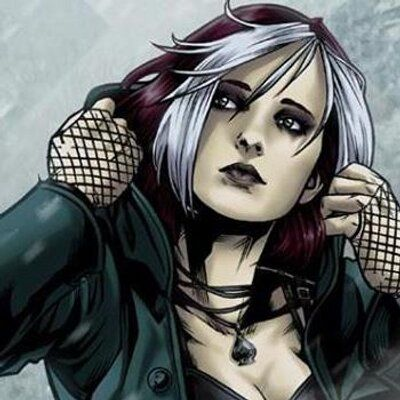
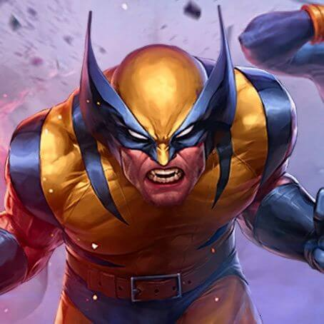
Anjo
Anjo nasceu como Warren Worthington III na multimilionária família Worthington. Seu pai, Warren Worthington Jr., esperava grandes feitos de seu único filho e que ele continuasse o legado familiar. Mas seus poderes mutantes seriam o início de grandes mudanças para o filhinho de papai.
Ciclope
Ele é filho do Pirata Espacial, Corsário, e irmão de Alex Summers, o também herói Destrutor, e de Gabriel Summers, o Vulcano. Foi casado com Madelyne Pryor, que era um clone da X-Man Jean Grey, com quem teve um filho chamado Nathan Summers, que no futuro se tornou o herói Cable.
Colossus
Colossus, alter-ego de Piotr Rasputin (Peter) é um personagem de histórias em quadrinhos da editora Marvel Comics, e faz parte do universo dos X-Men.
Fera
Hank é filho único de Edna e Norton MacCoy. Antes de seu nascimento, seu pai trabalhava numa usina nuclear, ocorreu um acidente onde Norton sobreviveu por pouco. Sempre especulou-se o que causara a mutação na nova geração de seres humanos, no caso de Hank suspeita-se que foi este acidente. Ao contrário de outros mutantes, ele já nasceu com pés e mãos grandes, além de uma força bem incomum para um bebê.
Homem de gelo
O Homem de Gelo (Iceman) é o codinome de Robert Louis "Bobby" Drake, um super-herói mutante do Universo Marvel criado pelo escritor Stan Lee e pelo desenhista/co-escritor Jack Kirby em 1963.

Jean Grey
Jean Grey era a filha mais nova do Professor John Grey do Departamento de História do Colégio Bard em Annandale-on-Hudson, Nova York, e sua esposa Elaine Grey. Quando Jean tinha dez anos de idade, ela estava brincando com sua melhor amiga, Annie Richardson, quando Annie foi atropelada por um carro.

Kitty Pryde
Kitty nasceu em Deerfield, Illinois. Quando ela tinha 13 anos, seus poderes começaram a se manifestar. Tanto o Clube do Inferno quanto os X-Men foram atrás da mutante. Kitty não gostou de Emma Frost e preferiu se juntar aos X-Men, criando uma relação amigável com a Tempestade.
Noturno
Sob a forma de uma nobre Alemã, a mutante Mística casou-se com o Barão Christian Wagner. Enquanto isso, Mística teve um caso com o misterioso Azazel de La Isla des Demonas e ficou grávida de seu filho. Azazel disse a Mística para criar seu filho como se fosse do Conde. Raven, de coração partido, concordou e, embora Christian suspeitava quanto à paternidade do bebê, sua súbita morte "acidental" assegurou que ninguém mais ouvisse suas suspeitas. O bebê nasceu visivelmente mutado com pelo azul por todo o corpo, orelhas pontudas, olhos iridescentes e uma cauda. Devido ao choque e o estresse do difícil parto do menino, Mistica perdeu a concentração e, acidentalmente, revelou sua verdadeira forma. A notícia se espalhou sobre ela e a condição do bebê e os dois foram perseguidos por uma multidão enfurecida empunhando tochas. Mística desmaiou e deixou o jovem Kurt Wagner flutuando em um rio durante a sua fuga.
Professor Chavier
Charles Francis Xavier era o filho de um renomado cientista nuclear. Após a morte de seu pai, sua mãe se casou com um homem bruto e violento, o que causou problemas durante a juventude do mutante, que tinha que conviver com seu meio-irmão, Cain Marko - que se tornaria o Fanático.
Tempestade
Nascida na África, Ororo Munroe, é filha de uma princesa tribal do Quênia e um fotojornalista americano. Tempestade foi criada no Harlem e no Cairo. Ela se tornou órfã depois que seus pais foram mortos no meio de um conflito árabe-israelense.
Vampira
Vampira é uma mutante capaz de "sugar" as qualidades e poderes de quem quer que toque. Em sua estréia, ela era uma vilã. Sua origem só foi explicada mais tarde: ela possivelmente foi criada perto do Rio Mississipi, no Sul. Em sua adolescência, ela e seu namorado, Cody Robbins, se beijaram, e, em consequência, ela momentaneamente absorveu as memórias do rapaz e se tornou ele, com seus pensamento e realidade competindo com sua própria consciência. Na hora, o jovem entrou em coma e a garota, não conseguindo entender o que havia acontecido, fugiu – o que ela iria se acostumar a fazer durante sua adolescência.
Wolverine
Wolverine nasceu James Howlett no norte de Alberta, Canadá, no final da década de 1880, supostamente filho dos ricos proprietários de fazendas John e Elizabeth Howlett, embora ele seja realmente o filho ilegítimo de Elizabeth e do caseiro dos Howletts, Thomas Logan.